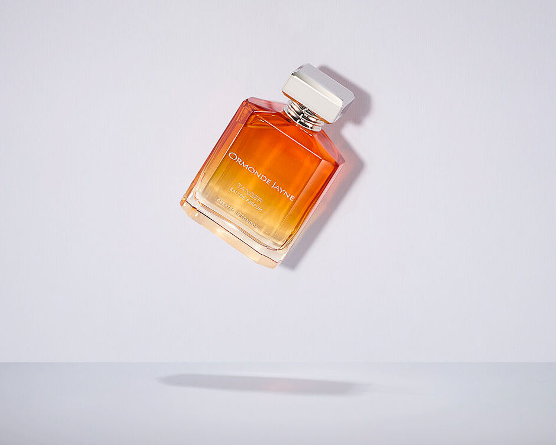
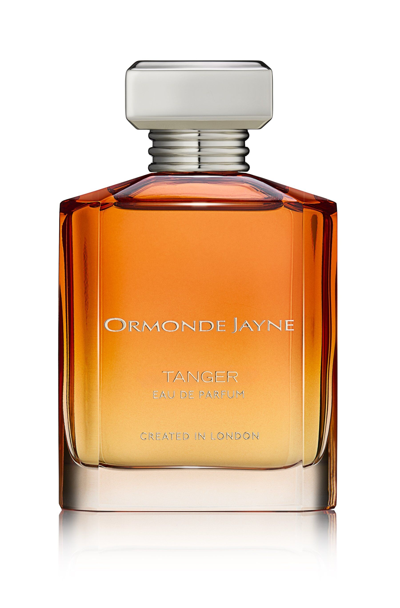
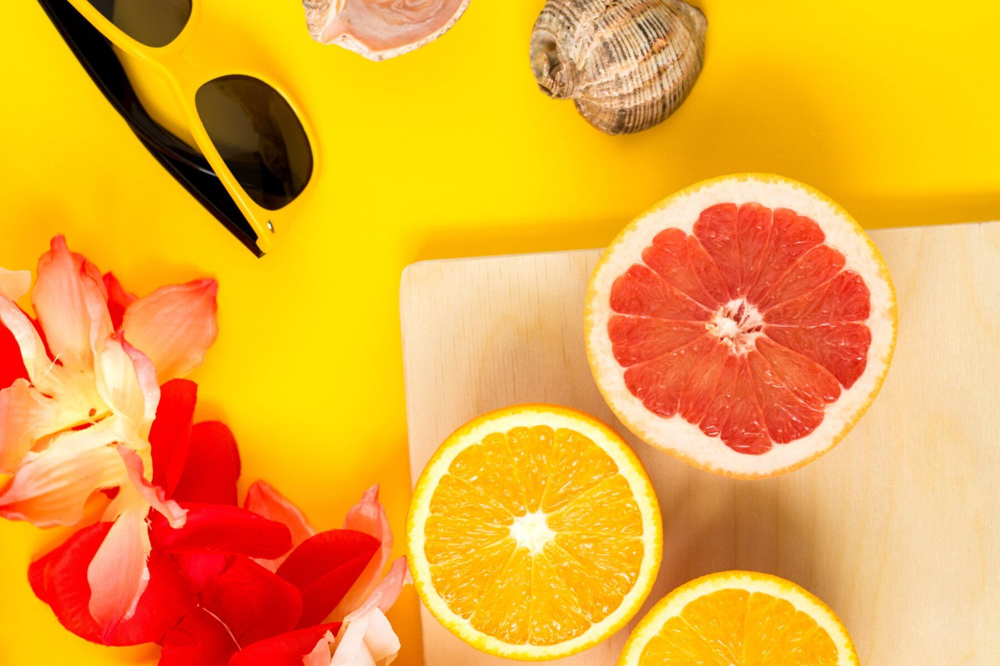
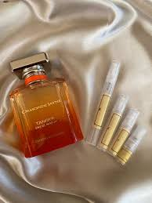

Tanger by Ormonde Jayne

Los perfumes exclusivos, limitados por región geográfica, mercado, temporada o tienda, parecen estar muy de moda en este momento y Ormonde Jayne está dejando su propia huella en ese panorama con el lanzamiento de una fragancia exclusiva para los mercados norteamericano y canadiense. Tanger se lanzó originalmente en los oscuros días de 2020, de forma muy limitada. Rápidamente se convirtió en una de las favoritas del equipo de Ormonde Jayne por su carácter soleado y su ambiente vacacional, lo que la convirtió en la fragancia perfecta para ayudarles a capear los cierres y las restricciones de viaje. En 2024, Tanger está de vuelta, pero sólo para determinadas regiones geográficas.
Un Paseo Aromático por los Mercados de Tánger: Calidez y Dulzura en Cada Nota
La inspiración para la fragancia surgió originalmente de la idea de pasear por los hermosos mercados de fruta de Tánger con el calor del sol y los cítricos en el aire, los vendedores del mercado ofreciéndote una rodaja de naranja para que pruebes su dulzura. En esta fragancia, Linda Pilkington ha querido capturar la calidez del sol y la cáscara de los cítricos, pero sin que la fragancia se convirtiera en una colonia. Para ello, ha combinado un acorde cítrico de naranja con ylang ylang, pétalos de rosa y vainilla de Madagascar. La idea es que la fragancia resulte atractiva para quienes desean algo similar a una colonia, pero menos fuerte.

Equilibrio Perfecto: De la Efervescencia a la Serenidad con Notas de Musgo y Vainilla
En la base, el musgo y el acorde balsámico se combinan, y para mí sólo hay un toque de cálidos pinos en lo que evocan los dos elementos. Esta fase concreta de la fragancia brilla, pero también es bastante apacible y reposada en cierto modo, combinando muy bien el comienzo efervescente y animado con algo más relajado más adelante y aportando un pequeño toque de serenidad. Los musgos también contribuyen al tono más seco que percibimos en la base, y de nuevo sirven para equilibrar el comienzo más jugoso. Por último, una vainilla muy suave y sabiamente manipulada completa el cuadro, y su dulzura lo une todo de forma bastante hermosa, con un toque final de delicadeza y aplomo. En esta fase de la fragancia también hay un toque picante, que realza la dulzura de la vainilla y da al neroli un pequeño impulso picante. Sin embargo, no es abrasivo, sólo está ahí, animando desde el fondo.

Elegancia Atemporal: Tanger de Ormonde Jayne, un Aroma Versátil para Todas las Estaciones
Las fragancias de Ormonde Jayne suelen tener un sentido de la elegancia realmente agradable. Son fragancias adultas que en su mayoría son amables y fáciles de gustar. Tanger no es diferente. Es elegante, sofisticada y nada tonta. Ormonde Jayne apuesta por fragancias bien compuestas y de buena calidad en lugar de trucos o seguir tendencias, y Tanger representa bien este enfoque. El sol resplandece en la fragancia, que desprende un ambiente relajado y estimulante. La fragancia es muy difusiva y dura muy bien, pero no es el tipo de cosa que molestará odiosamente a la gente que se acerque. Tanger es también una de esas fragancias que funcionan perfectamente para una amplia variedad de ocasiones, desde el día a la noche, lo que significa que podría ser un básico en un armario de fragancias. Si tuviera que elegir, diría que la usaría sobre todo en las noches de verano o en las vacaciones de verano. Aunque tiene un tono muy veraniego, me imagino que usarlo en pleno invierno te hará sentir como si estuvieras bañado en la luz del verano, ¡lo cual no es más que algo bueno!

Noticias Recientes
Desde un Android - Hace 12 min
Tanger parece ser una auténtica escapada sensorial. El hecho de que haya sido inspirada por los mercados de fruta de Tánger y el calor del sol es un detalle que sin duda resalta su carácter soleado y alegre. La combinación de naranja, ylang ylang, y vainilla de Madagascar debe aportar una frescura y dulzura equilibrada que suena muy atractiva.
Desde un Android - Hace 2 min
La transición entre las notas efervescentes de cítricos y el toque sereno de musgo y vainilla sugiere una experiencia olfativa compleja y matizada. La forma en que el musgo y el acorde balsámico aportan un equilibrio es interesante y puede ofrecer una profundidad que enriquece la fragancia en su conjunto.
Desde una Laptop - Hace 30 min
Me encanta la idea de que Tanger sea una fragancia que puede funcionar para diversas ocasiones y estaciones. La elegancia y sofisticación de Ormonde Jayne siempre se destaca, y parece que esta fragancia no es la excepción. Es genial que una fragancia veraniega pueda también evocarnos el sol durante el invierno.
Desde una PC - Hace 1 dia
Es impresionante que Tanger sea descrita como una fragancia que ofrece una buena proyección sin ser invasiva. La capacidad de durar bien y, al mismo tiempo, ser discreta, es una cualidad muy apreciada en una fragancia.

Desde una Laptop - Hace 2 min
La combinación de la vainilla con un toque picante para realzar la dulzura suena realmente intrigante. Parece que Ormonde Jayne ha logrado crear una fragancia que no solo es atractiva y bien balanceada, sino que también tiene ese toque especial que puede hacer que se destaque en una colección.